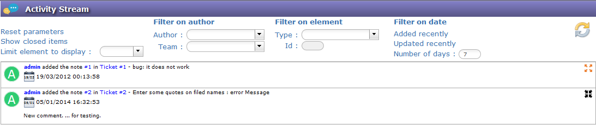
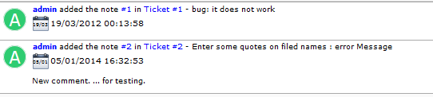
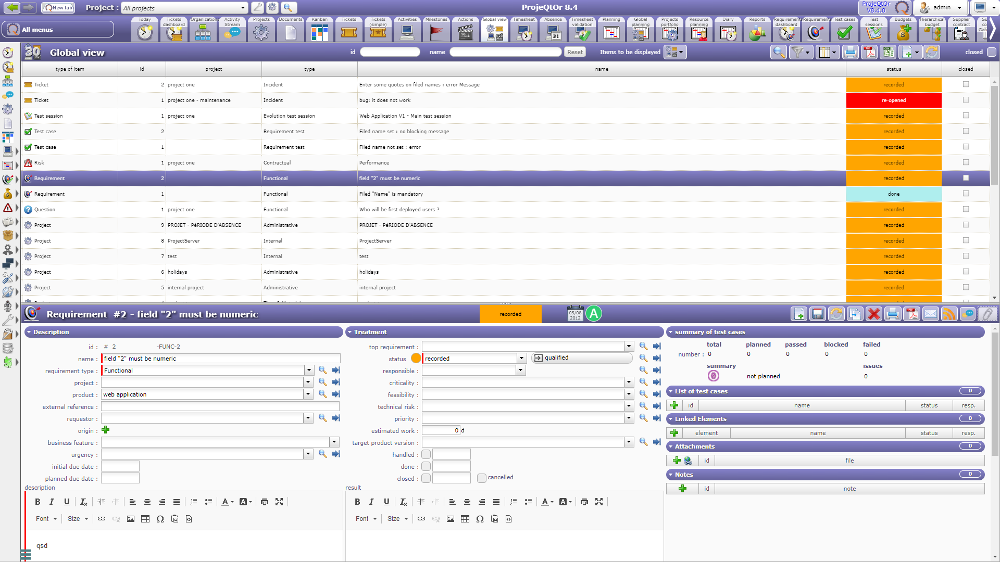
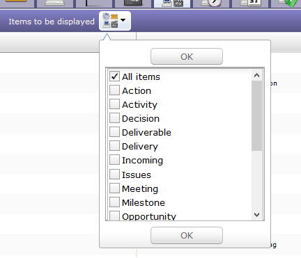
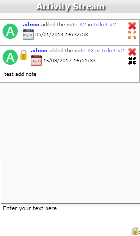

Activity Stream¶
This screen is devoted to display notes.
To default you will see all visible notes for each items.
There are filters to refine the search.

Note
- Click on to hide note comment.
- Click on to display note comment.

in either case, the notes are displayed or not.
We can see on this summary several elements displayed:
- The creator of the note,
- The ID of the note
- The element and its ID on which the note was created
- the date and time of creation of the note
- and the note itself - option enabled
Global view¶

Global view screen
The “Global view” screen lists all the main objects created during a project. This allows you to quickly search through all types of items available.
You can also choose to display only certain items through the list to display

Display one or more items
Chat¶
Display of notes on right part of screen.
The chat displays notes on the selected item.
Possibility to quickly add note, write your text and press ‘Enter’ key.
You can change the visibility of the note if you click on the bottom right corner.
- Click on
 to hide or display the chat.
to hide or display the chat.
